WL104K — qualitative comparison on the existing scene data set
POST HOC · owner-requested qualitative material · frozen WL104K verdict unchanged
Three existing WL104 scenes (sphere + cube with the coated-conductor material) rendered with the layered physical reference and with the material
response of A (shared ER-v1-GF), T (one shared symmetric gate) and P (per-component symmetric gates, the ER-v1-SDM candidate), all fitted on the
WL104J angular fit set. All arms are evaluated at the same sampled directions (common R0 proposal, F/p recomputed per arm), so the images differ only
through the material response. The frozen WL104K verdict (INCONCLUSIVE; scene stage not run under the frozen rule) is unchanged; these renders are
owner-requested qualitative material.
Click to switch (same exposure within each panel)
iid_1 (development material) — first bounce (direct light on the objects)
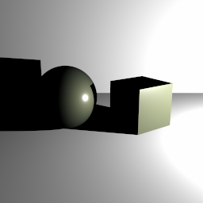
iid_1 (development material) — first + second bounce
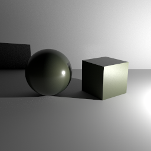
iid_1 (development material) — total (first + second + higher-order)
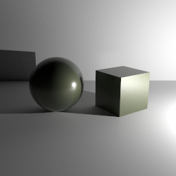
hard_1 (development material) — first bounce (direct light on the objects)
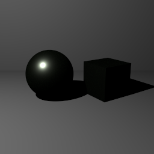
hard_1 (development material) — first + second bounce
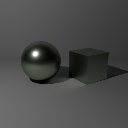
hard_1 (development material) — total (first + second + higher-order)
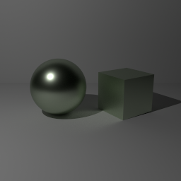
iid_159 (held-out material, held-out camera) — first bounce (direct light on the objects)
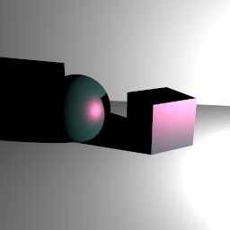
iid_159 (held-out material, held-out camera) — first + second bounce
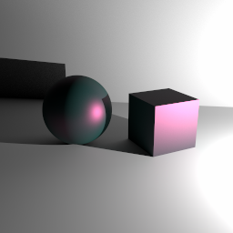
iid_159 (held-out material, held-out camera) — total (first + second + higher-order)
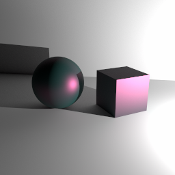
Descriptive scene contrast P − A (objects stable RMS vs reference, mean of 4 starts, 12-replicate jackknife 95 % CI)
scene
first bounce
second bounce
total
replay identity
iid_1 (development material)
-94.22% [-94.29, -94.16]
-100.00% [-111.55, -88.45]
-97.13% [-112.94, -81.33]
True
hard_1 (development material)
+3.56% [+0.47, +6.65]
-29.00% [-31.18, -26.82]
+3.05% [+0.01, +6.09]
True
iid_159 (held-out material, held-out camera)
-32.41% [-32.61, -32.21]
-33.48% [-36.70, -30.27]
-32.89% [-33.32, -32.47]
True
Negative = P closer to the reference. "Total" uses the archived R0 higher-order term for every model.
Figures
Scene-level error summary
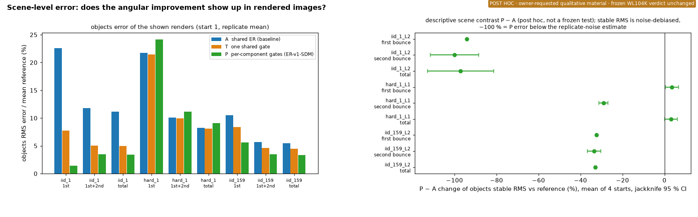
iid_1 (development material): full-frame renders and error maps
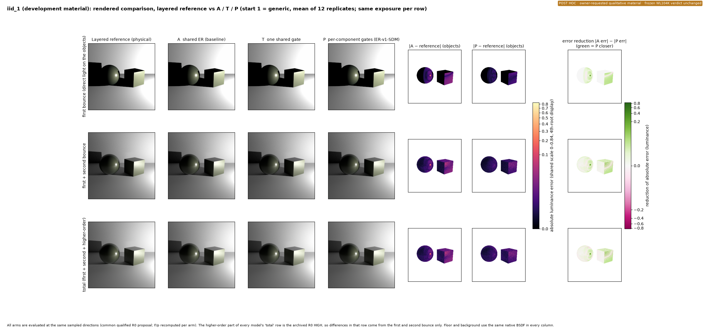
iid_1 (development material): zoomed highlight / grazing regions
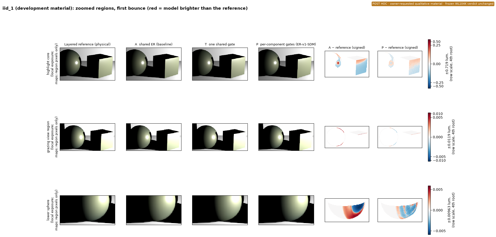
hard_1 (development material): full-frame renders and error maps
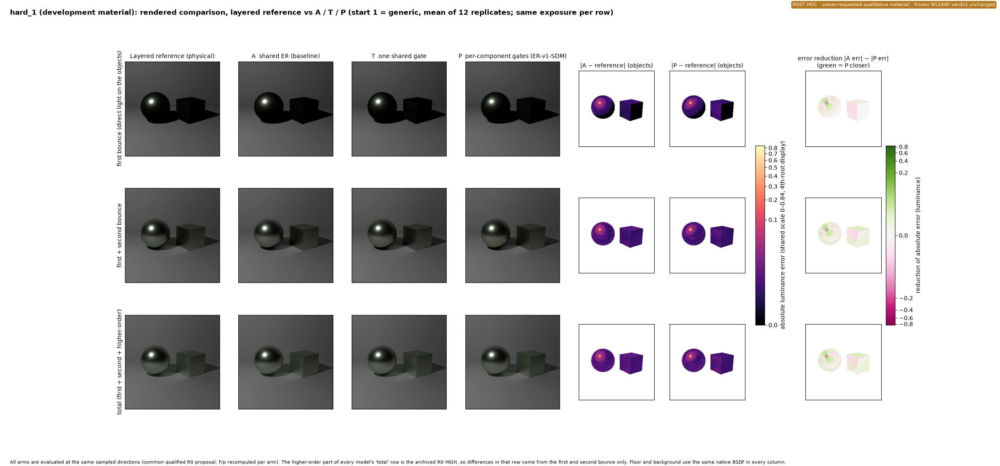
hard_1 (development material): zoomed highlight / grazing regions
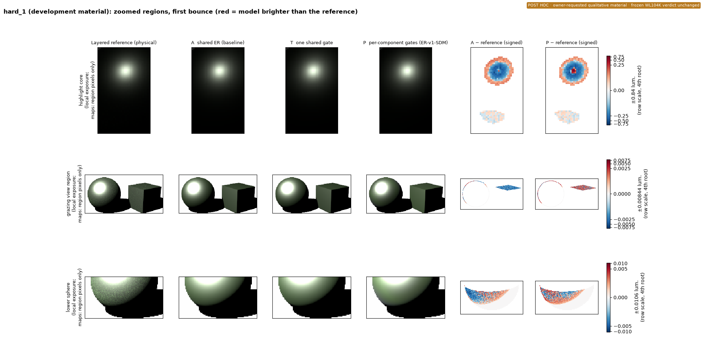
iid_159 (held-out material, held-out camera): full-frame renders and error maps
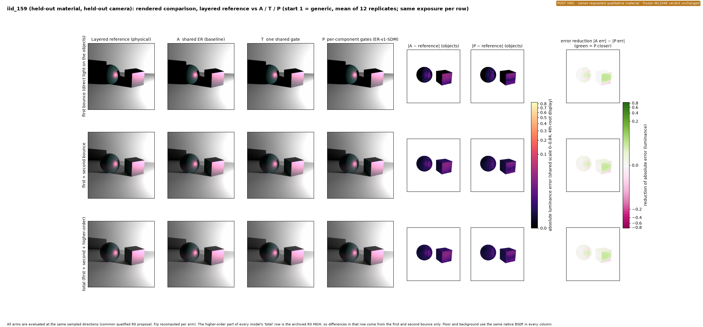
iid_159 (held-out material, held-out camera): zoomed highlight / grazing regions